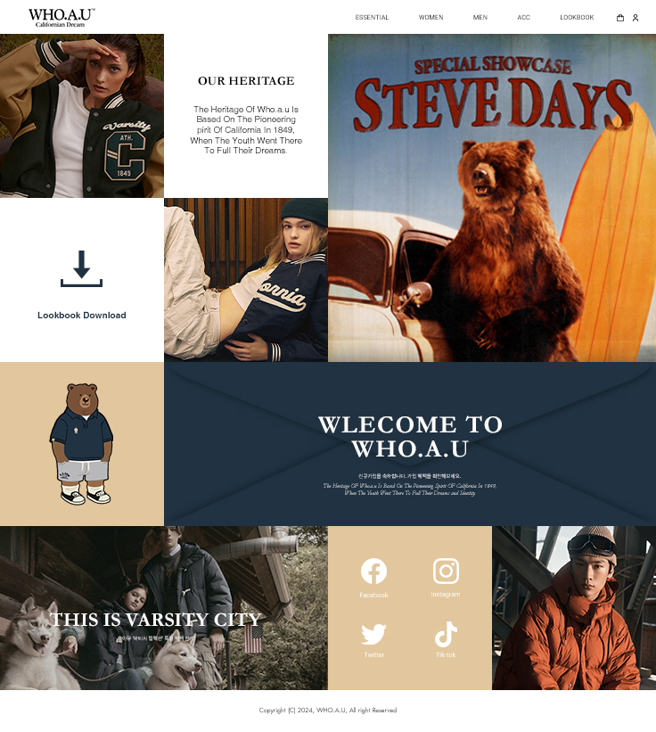
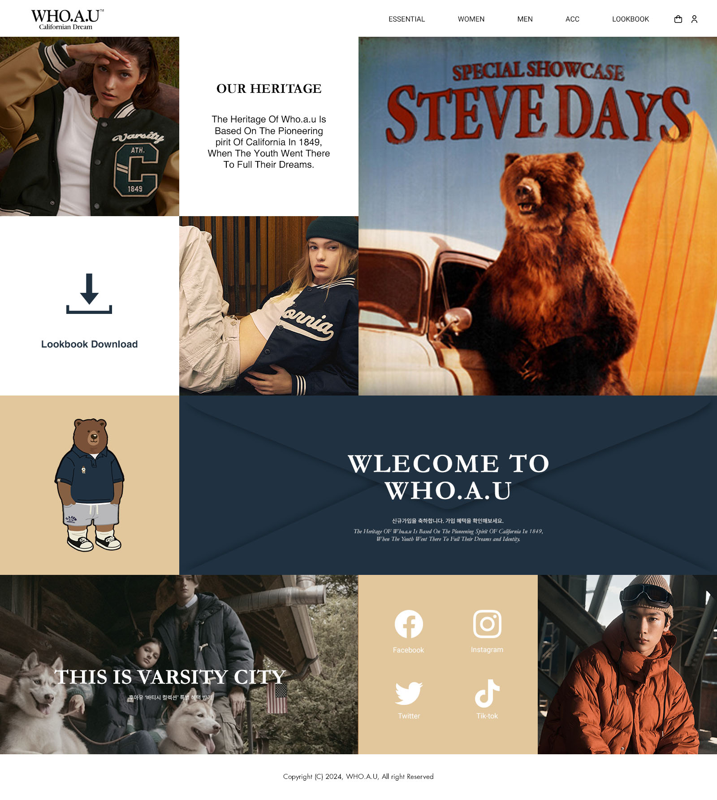

WHO.A.U
Web Design
Web Design
#203242
#e2c79d
Garamont
Roboto
WHO.A.U 웹페이지 시안입니다.
의류 브랜드 WHO.A.U의 웹사이트를 모듈 그리드를 활용하여 디자인하였습니다.
주조색으로 고급스럽고 세련된 느낌의 다크 네이비톤을 사용하였고,
보조색으로 따뜻하고 부드러운 베이지톤을 사용하여
고급스러우면서도 편안한 느낌을 주고자 하였습니다.
메뉴에는 깔끔한 느낌의 Roboto를 사용하여 가독성을 높였습니다.

